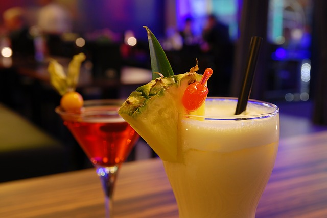

칵테일의 기원



information
복잡 미묘한 맛을 지닌 보건음료이다. 세계 각국의 술을 그대로 마시지 않고 마시는 사람의 기호와 취향에 맞추어 독특한 맛과 빛깔을 내도록 하는, 술의 예술품이라 할 수 있다.
칵테일이라는 명칭의 유래는 여러 설이 있으나, 1795년경 미국 루이지애나주(州) 뉴올리언스에 이주해온 A.A.페이쇼라는 약사가 달걀 노른자를 넣은 음료를 조합해서 프랑스어로 코크티에(coquetier)라고 부른 데서 비롯되었다는 설이 있다.
칵테일 종류
준벅, 코스모폴리탄, 모히또, 프렌치75, 피치크러쉬